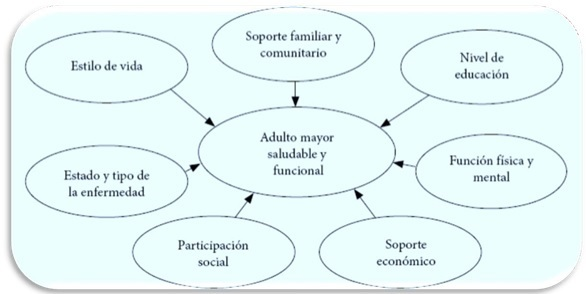
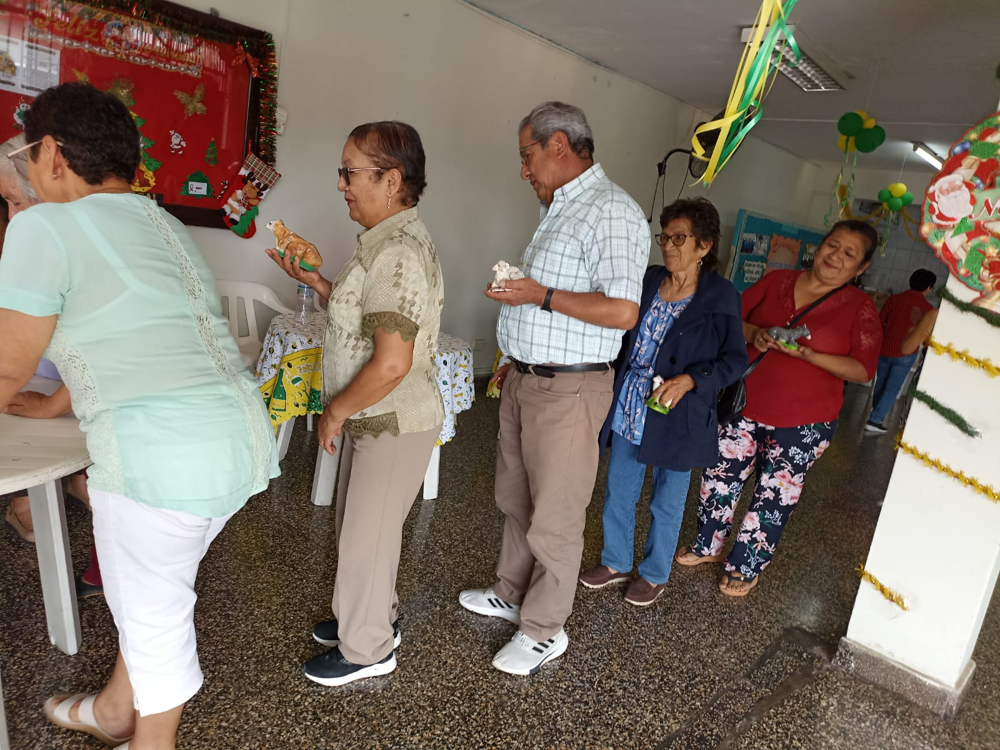
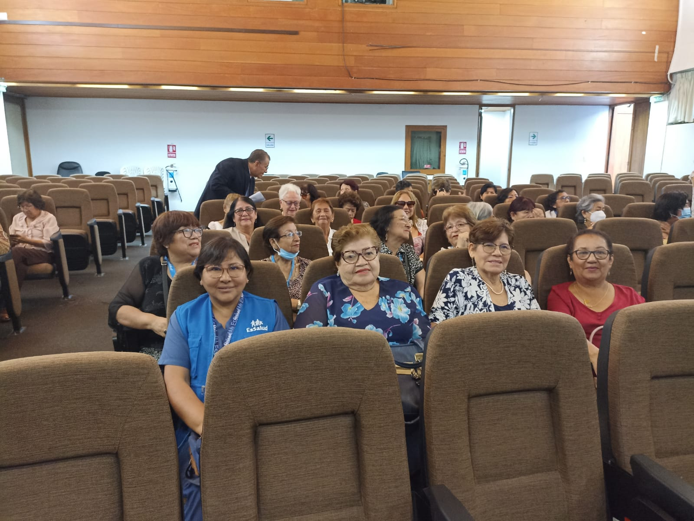
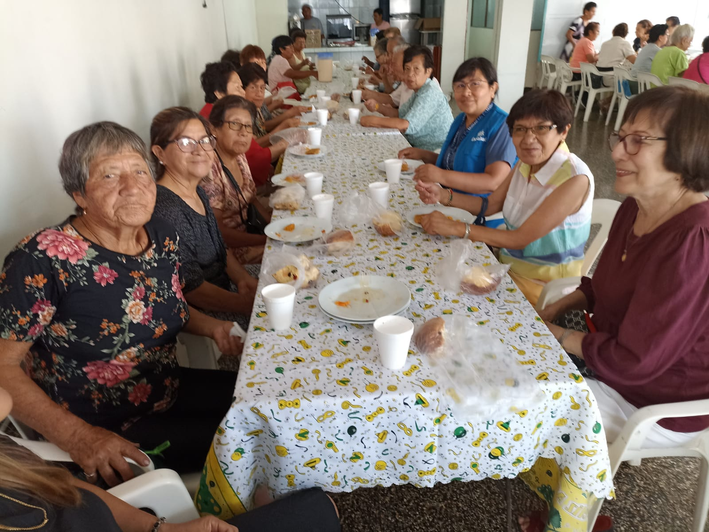
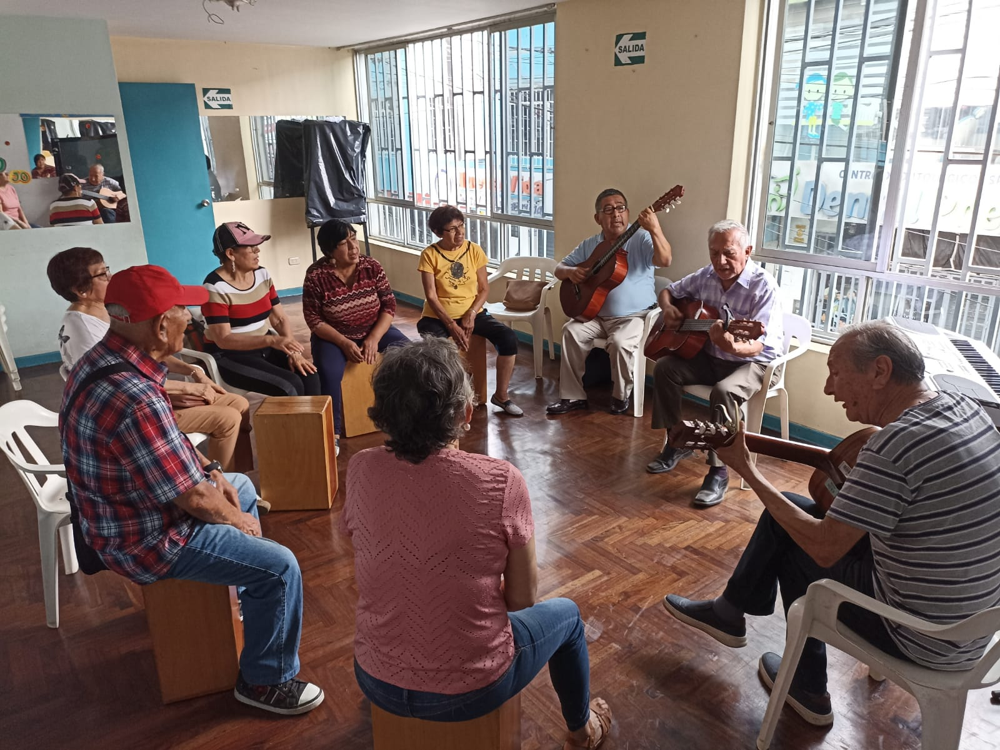
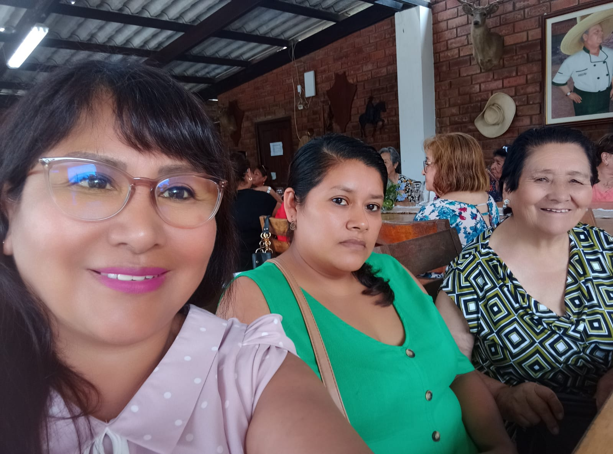
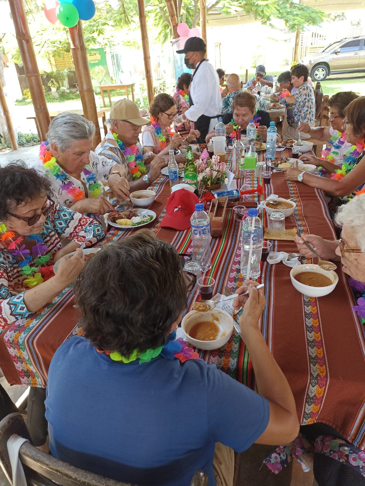
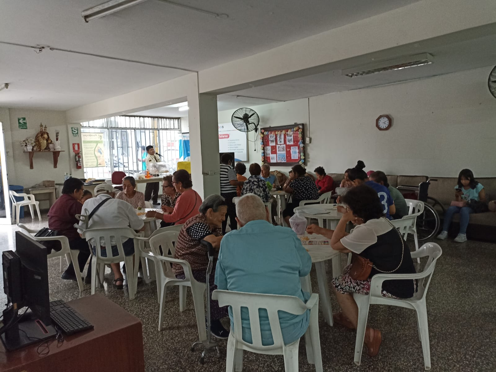
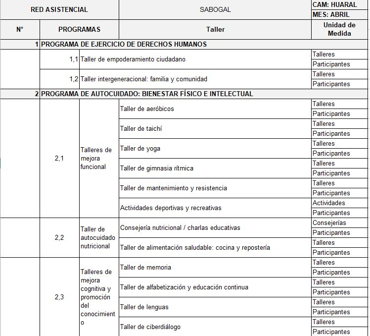
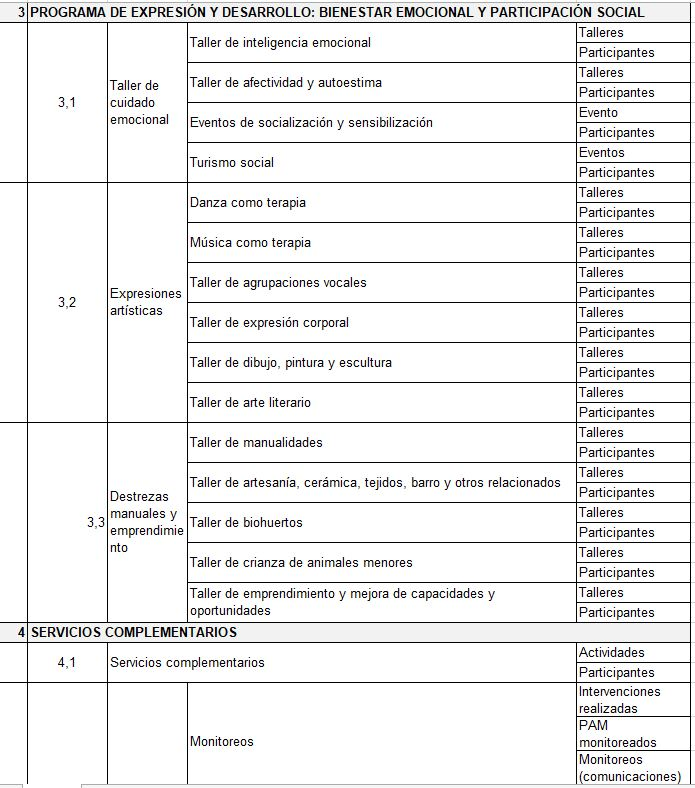

Población Adulto Mayor y la OMS
 La Asamblea General de las Naciones Unidas declaró el periodo 2021-2030 como la Década del Envejecimiento Saludable y pidió a
la OMS que se encargara de liderar su puesta en práctica. La Década es un proyecto de colaboración a escala mundial que pretende
aunar los esfuerzos de los gobiernos, la sociedad civil, los organismos internacionales, los profesionales, el mundo académico, los medios de comunicación y el sector privado para llevar a cabo una acción concertada, catalizadora y co
laborativa a lo largo de 10 años orientada a promover vidas más largas y saludables. La Década del Envejecimiento Saludable (2021-2030) tiene como objetivo reducir las desigualdades en materia de salud y mejorar la vida de las personas mayores, sus familias y sus comunidades a través de la acción colectiva en cuatro esferas:
La Asamblea General de las Naciones Unidas declaró el periodo 2021-2030 como la Década del Envejecimiento Saludable y pidió a
la OMS que se encargara de liderar su puesta en práctica. La Década es un proyecto de colaboración a escala mundial que pretende
aunar los esfuerzos de los gobiernos, la sociedad civil, los organismos internacionales, los profesionales, el mundo académico, los medios de comunicación y el sector privado para llevar a cabo una acción concertada, catalizadora y co
laborativa a lo largo de 10 años orientada a promover vidas más largas y saludables. La Década del Envejecimiento Saludable (2021-2030) tiene como objetivo reducir las desigualdades en materia de salud y mejorar la vida de las personas mayores, sus familias y sus comunidades a través de la acción colectiva en cuatro esferas:
- Nuestra forma de pensar, sentir y actuar en relación con la edad y el edadismo.
- Ayudar a las comunidades de forma que se fomenten las capacidades de las personas mayores.
- Prestar servicios de atención integrada y atención primaria de salud centrados en la persona, que respondan a las necesidades de las personas mayores.
- Proporcionar acceso a la asistencia a largo plazo a las personas mayores que la necesiten.
Provincia de Huaral
Huaral dista de Lima aproximadamente a 81 km. Tiene 12 distritos: Atavillos Alto y Bajo, Aucallama, Ihuari, Lampián, Pacaraos, San Vicente de Acos, Santa Cruz de Andamarca, Sumbilca y 27 de Noviembre.
Huaral cuenta con una población de 3652 PAM asegurada.
Los ingresos económicos de la PAM del CAM Huaral proceden del trabajo en el agro; de las pensiones producto de sus aportes que en promedio son: s/. 410.00 El 70% vive con familia; el 20% es viudo y el 10 % vive solo.


Factor Económico
- Los/as adultos/as mayores que están incluidos en la Población Económicamente Activa (PEA) representan el 56,1%, siendo mayor el porcentaje de hombres (68,5%) que de mujeres (44,7%). Los adultos mayores que no forman parte de la Población Económicamente Activa (NO PEA), representan el 43,9%, donde el porcentaje de mujeres es mayor al de los hombres en 23,8%.
- De cada 100 adultos/as mayores ocupados/as del área urbana del país, 25 trabajan en la rama de Comercio, 16 en Agricultura/Pesca/Minería, 9 en Manufactura y Alojamiento y Servicios de Comida en cada caso, 6 en Transporte y Comunicaciones y en Construcción, entre los principales. El 25,2% se dedican a Otros Servicios. Respecto a similar trimestre del 2017, los trabajadores dedicados a la Agricultura/Pesca/Minería aumentaron en 3,6 puntos porcentuales; similar situación se dio en Alojamiento y Servicios de Comida y Construcción con 2,1 y 1,5 puntos porcentuales, respectivamente.
Factor Demográfico
- Como resultado de los grandes cambios demográficos experimentados en las últimas décadas en el país, la estructura por edad y sexo de la población está experimentando cambios significativos. En la década de los años cincuenta, la estructura de la población peruana estaba compuesta básicamente por niños/as; así de cada 100 personas 42 eran menores de 15 años de edad; en el año 2018 son menores de 15 años 27 de cada 100 habitantes. En este proceso de envejecimiento de la población peruana, aumenta la proporción de la población adulta mayor de 5,7% en el año 1950 a 10,4% en el año 2018.
Factor Sociocultural
- La participación social es considerada uno de los factores protectores para la salud y la funcionalidad del adulto mayor, junto con el estilo de vida, el apoyo familiar, el nivel educacional, función física y mental, apoyo económico, estado y tipo de enfermedad.

Objetivos
- Lograr el incremento de participantes adultos mayores asegurados que sebeneficien de las ofertas que ofrece la cartera gerontológica social de ESSALUD.
- Llegar a los grupos de adultos mayores que se encuentran sin soporte informático ni internet para que puedan tener el acceso a los talleres de forma semipresencial para la continuidad de la mejora de su calidad de vida.
- Mitigar que los factores de riesgo aparezcan y se manifiesten en enfermedades. Además, promover la concientización y los conocimientos sobre los riesgos en los problemas de nuestra salud.
- Lograr la participación de más de 100 adultos mayores en la plataforma virtual, lo que les permitiría ordenar, organizar y socializar con los Adultos mayores de otros CAMs a nivel nacional, el cual ayudara en fortalecer su autoestima.








